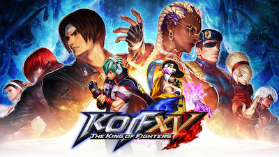
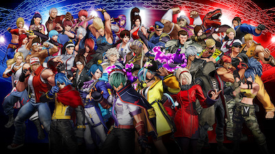
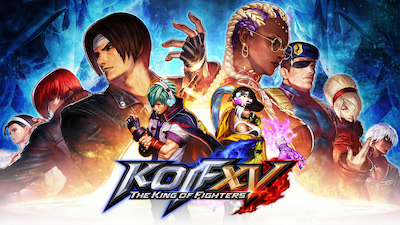
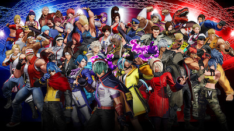
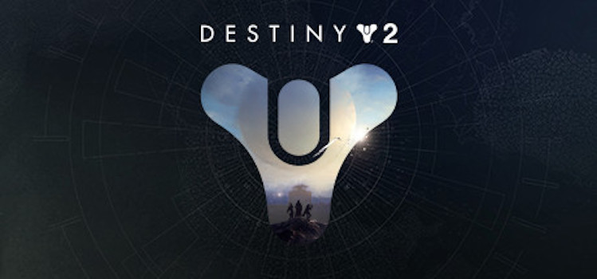
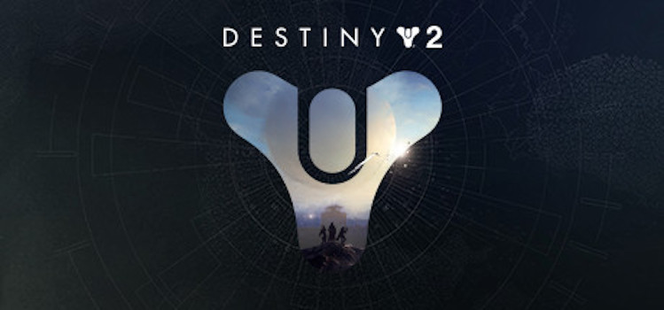
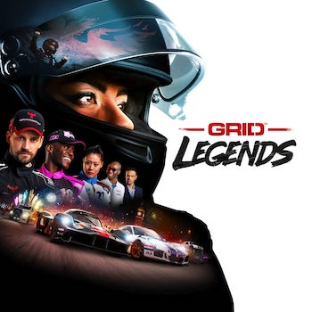
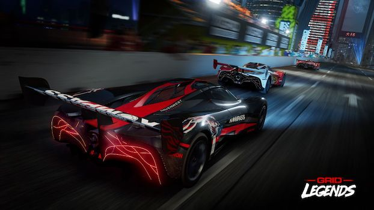
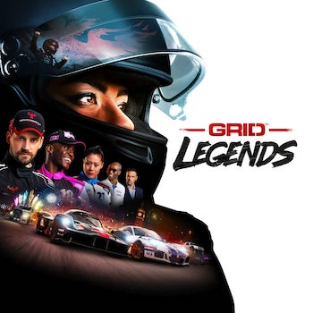
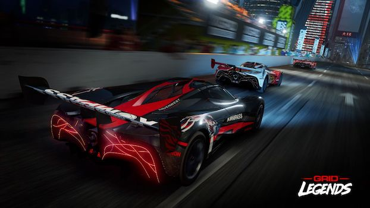

Horizon Forbidden West is a 2022 action role-playing game developed by Guerrilla Games and published by Sony Interactive Entertainment. A sequel to 2017's Horizon Zero Dawn, the game is set in a post-apocalyptic version of the Western United States recovering from the aftermath of an extinction event caused by a rogue robot swarm. The player can explore the open world and complete quests using ranged and melee against hostile machine creatures.
Release Date : 18 February 2022
 



The King of Fighters XV[a], also called KOF XV, is a fighting game developed by SNK. It was released on February 17, 2022, for Microsoft Windows, PlayStation 4, PlayStation 5, and Xbox Series X/S. This is also the first game in The King of Fighters series created using Unreal Engine 4, and the first to implement GGPO rollback networking. Taking place after the events of The King of Fighters XIV, the narrative primarily revolves around two fighters with multiverse-related supernatural powers, Shun'ei and Isla, among other returning heroes facing revived threats. King of Fighters XV generally received praise for its character roster, team-based gameplay, and smooth online performance, but criticism for its story mode, complex tutorials, and mechanics
Release Date : 17 February 2022

 

Destiny 2 (also known as Destiny 2: New Light and in Korea as Destiny: Guardians) is a free-to-play online-only multiplayer first-person shooter video game developed by Bungie. It was originally released as a pay to play game in 2017 for PlayStation 4, Xbox One, and Microsoft Windows. It became free-to-play, utilizing the games as a service model, under the New Light title on October 1, 2019, followed by the game's release on Stadia the following month, The game was published by Activision until December 31, 2018, when Bungie acquired the publishing rights to the franchise. It is the sequel to 2014's Destiny and its subsequent expansions.
Release Date : 20 December 2022
 



Grid Legends (stylised as GRID Legends) is a 2022 racing video game developed by Codemasters and published by Electronic Arts. It is the fifth installment in the Grid franchise. Grid Legends contains more than 130 tracks to race on, ranging from real-life circuits like Brands Hatch, Indianapolis Motor Speedway, Suzuka International Racing Course and the return of Mount Panorama Circuit, to street circuits in various cities such as San Francisco, Paris, London, and Moscow.[3] The game features more than 100 vehicles, including touring cars, semi-trailer truck, open-wheel car, stadium trucks, drift cars, and even electric vehicles, to compete in arena ovals, on street circuits, or off-road tracks